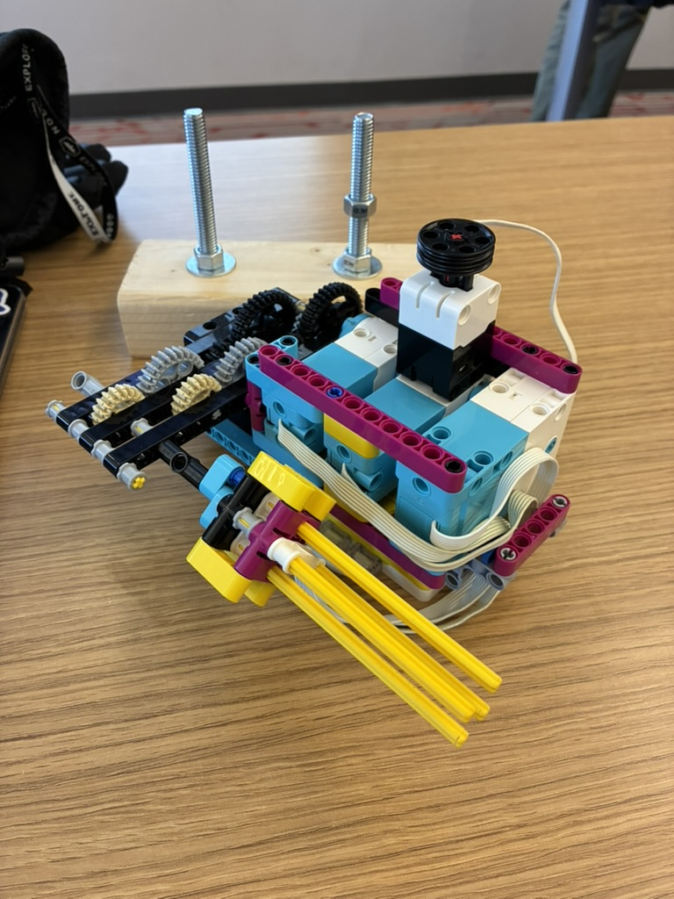
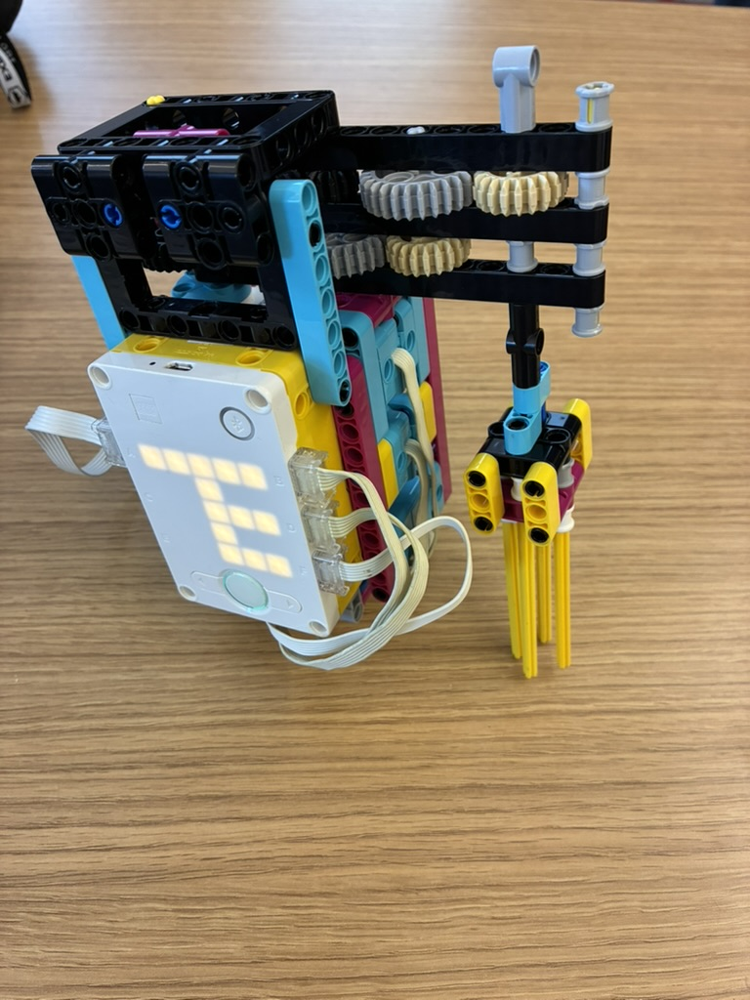

For my engineering class, I designed and built a LEGO-based device capable of unscrewing a nut from a bolt. The goal of the project was to create a functional mechanical system that could perform a task efficiently while allowing the user to control its operation. My design incorporated a force sensor that controlled the speed of the motor based on how much pressure was applied. The harder the user pressed on the sensor, the faster the device would rotate, allowing for precise control over the unscrewing process.
Another key feature of my design was its ability to switch rotational direction each time the sensor was pressed and held. This allowed the device to alternate between clockwise and counterclockwise rotation, making it possible to both tighten and loosen a nut as needed. Through this project, I gained experience with LEGO mechanisms, motor control, sensors, and programming. It also helped me understand how input devices can be used to control a machine's behavior and how mechanical and electronic components can work together to create a functional engineering solution.
Written with the help of ChatGPT.

